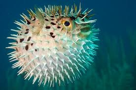

El pez globo es un pez marino conocido por su capacidad de inflarse cuando se siente en peligro. Al inflarse aumenta mucho su tamaño para evitar ser comido por los depredadores.

• Puede inflarse como una pelota.
• Tiene espinas en su cuerpo.
• Vive en mares tropicales y subtropicales.
• Puede medir entre 3 y 60 centímetros dependiendo de la especie.
El pez globo contiene una toxina llamada tetrodotoxina, que es extremadamente venenosa. En algunos países como Japón se prepara como comida llamada fugu, pero solo chefs especialmente entrenados pueden cocinarlo de forma segura.